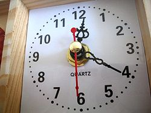
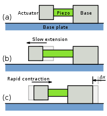

-
Generating Electricity from Crystals

-
Conceptual Design of Piezo Roads

-
Versatility of Piezo Electricity

-
Representation of Change of Shape to generate current

-
Practical Applications of Piezoelectricity


Applications
- High voltage and power sources
- Sensors
- Actuators
- Frequency standard and Motors
- Reduction of vibrations and noise and Infertility treatment
Frequency standard
The piezoelectrical properties of quartz are useful as standard of frequency.
- A Quartz Clock
Piezoelectric motors
Types of piezoelectric motor include:
- Slip-stick Actuator
Stick-slip motor works using the inertia of a mass and the friction of a clamp. Such motors can be very small. Some are used for camera sensor displacement, allowing anti shake function.